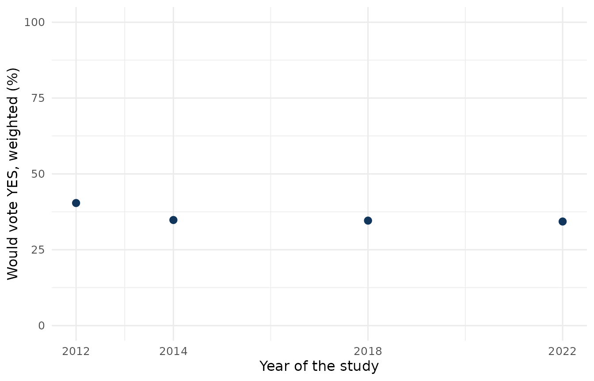

Example: support for independence
Source:vignettes/articles/analysis-sovereignty.Rmd
analysis-sovereignty.RmdThis page estimates support for Quebec independence in the studies of
the legacy merged file, get_qes_master(). It is built when
the website is built: the data files are downloaded from their Dataverse
deposits through qesR’s cache.
For estimates with the harmonization engine (experimental), with a comparability grade for each study’s question and the weight of the wave that asked it, see Harmonizing across studies.
A sovereignty question is only comparable across studies when it asks
the same thing. Since qesR 0.5.0, sovereignty_support holds
one question only: how the respondent would vote in a referendum on
Quebec becoming an independent country. Studies that asked something
else (the 1995 question on sovereignty with a partnership offer, a
“sovereign country”, follow-up questions put to undecided respondents,
or a favourable/opposed scale) have NA in that column. Each
estimate is computed within one study, with that study’s own weight
(survey_weight); it is a point estimate that ignores the
survey’s design.
tr <- function(en, fr) if (identical(params$lang, "fr")) fr else en
master <- get_qes_master(quiet = TRUE)
studies <- qes_studies()
master$family <- studies$family[match(master$qes_code, studies$study)]
master$year <- as.integer(master$qes_year)
# Weighted share of each value of x, within one study
wshare <- function(x, w) {
ok <- !is.na(x) & !is.na(w)
if (!any(ok)) return(NULL)
tapply(w[ok], x[ok], sum) / sum(w[ok])
}Table 1: which studies ask the independence question
attr(master, "legacy_na_columns") says why a column is
NA in a study; attr(master, "source_map")
names the variable each study’s column reads.
sources <- attr(master, "source_map")
sources <- sources[sources$harmonized_variable == "sovereignty_support",
c("qes_code", "source_variable")]
blanked <- attr(master, "legacy_na_columns")
blanked <- blanked[blanked$column == "sovereignty_support", c("study", "cause")]
items <- merge(sources, blanked, by.x = "qes_code", by.y = "study", all.x = TRUE)
items$year <- studies$year[match(items$qes_code, studies$study)]
items$in_column <- ifelse(is.na(items$cause), tr("yes", "oui"), tr("no", "non"))
items <- items[order(items$year, items$qes_code), c("qes_code", "year", "source_variable", "in_column")]
knitr::kable(
items, row.names = FALSE,
col.names = tr(c("Study", "Year", "Source variable", "Independence question"),
c("Étude", "Année", "Variable source", "Question sur l'indépendance"))
)| Study | Year | Source variable | Independence question |
|---|---|---|---|
| qes1998 | 1998 | NA | no |
| qes_crop_2007_2010 | 2007 | NA | no |
| qes2007 | 2007 | NA | no |
| qes2007_panel | 2007 | NA | no |
| qes2008 | 2008 | NA | no |
| qes2012 | 2012 | q52 | yes |
| qes2012_panel | 2012 | NA | no |
| qes2014 | 2014 | Q19 | yes |
| qes2018 | 2018 | q26 | yes |
| qes2018_panel | 2018 | NA | no |
| qes2022 | 2022 | cps_qc_referendum | yes |
The wording in the four studies that ask it:
asked <- items$qes_code[items$in_column == tr("yes", "oui")]
wording <- do.call(rbind, lapply(asked, function(s) {
v <- items$source_variable[items$qes_code == s]
q <- qes_question(s, v, lang = params$lang)
# a study documented in one language only: show that language
if (is.na(q$question)) q <- qes_question(s, v, lang = tr("fr", "en"))
q[, c("study", "variable", "question", "question_lang", "truncated")]
}))
knitr::kable(
wording, row.names = FALSE,
col.names = tr(c("Study", "Variable", "Question", "Language", "Truncated"),
c("Étude", "Variable", "Question", "Langue", "Tronquée"))
)| Study | Variable | Question | Language | Truncated |
|---|---|---|---|---|
| qes2012 | q52 | If there were a referendum on independence that asked whether Quebec should be an independent country, would you vote YES or NO? | en | FALSE |
| qes2014 | Q19 | If there were a referendum on independence that asked whether Quebec should be an independent country, would you vote YES or NO? | en | FALSE |
| qes2018 | q26 | If there were today a referendum on independence that asked whether Quebec should be an independent country, would you vote YES or NO? | en | FALSE |
| qes2022 | cps_qc_referendum | If there were today a referendum on independence that asked whether Quebec should be an independent country, would you vote YES or NO? | en | FALSE |
Table 2: support for independence
The share who would vote YES among respondents who answered YES or NO. “Don’t know” and refusals are left out.
sov <- do.call(rbind, lapply(split(master, master$qes_code), function(d) {
s <- wshare(d$sovereignty_support, d$survey_weight)
if (is.null(s) || !"1" %in% names(s)) return(NULL)
data.frame(study = d$qes_code[1], year = d$year[1],
n = sum(!is.na(d$sovereignty_support)), pct = round(100 * s[["1"]], 1))
}))
sov <- sov[order(sov$year), ]
knitr::kable(
sov, row.names = FALSE, format.args = list(decimal.mark = tr(".", ",")),
col.names = tr(c("Study", "Year", "N answering", "YES (%)"),
c("Étude", "Année", "N répondants", "OUI (%)"))
)| Study | Year | N answering | YES (%) |
|---|---|---|---|
| qes2012 | 2012 | 1323 | 40.4 |
| qes2014 | 2014 | 1353 | 34.8 |
| qes2018 | 2018 | 2558 | 34.6 |
| qes2022 | 2022 | 1284 | 34.3 |
# points only: the question's wording and timing change between studies
# (see the notes), so the studies do not form one series
ggplot(sov, aes(x = year, y = pct)) +
geom_point(size = 2.5, colour = "#12355b") +
scale_x_continuous(breaks = sov$year) +
scale_y_continuous(limits = c(0, 100)) +
labs(
x = tr("Year of the study", "Année de l'étude"),
y = tr("Would vote YES, weighted (%)", "Voterait OUI, pondéré (%)")
) +
theme_minimal(base_size = 12)
Notes
- The four studies are Quebec Election Studies, but they differ in
mode and population:
qes2018covers people aged 16 and over, andqes2022is an online panel of citizens aged 18 and over (qes_studies()). - The question was not asked at the same moment nor in the same words:
qes2022asked it during the campaign (itscps_wave), the others after the election, and the 2018 and 2022 questions add “today” (Table 1). The figure shows one point per study and does not join them into a series. -
qes2022’s wording is quoted, in English and French and not truncated, from its bilingual codebook (qes_docs("qes2022")). That wording ships under the study’s licence, CC BY-NC 4.0 (qes_cite("qes2022")). - For the other studies, read their own question with
get_qes()andqes_question(); comparing it with the independence question needs care, because the wording differs.